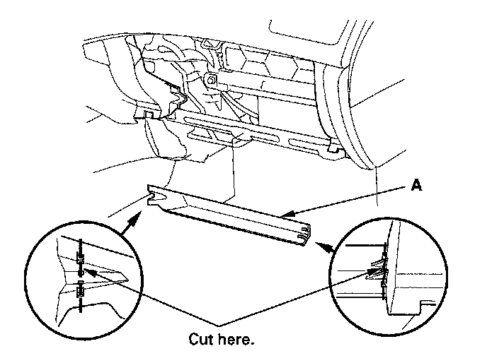
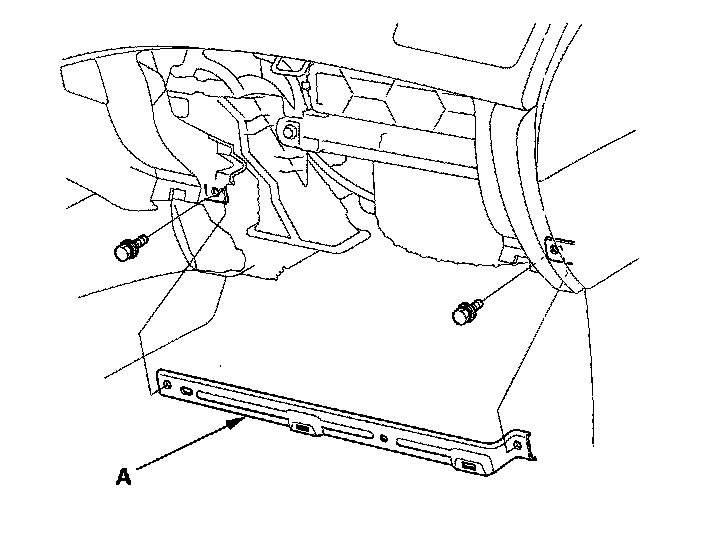
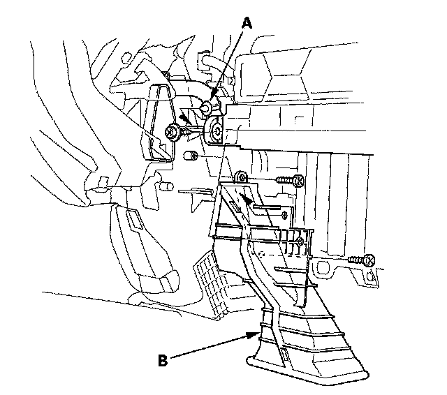
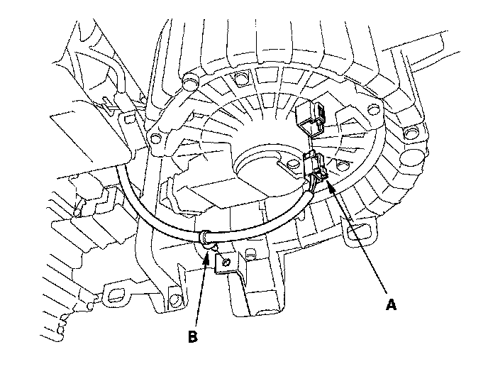
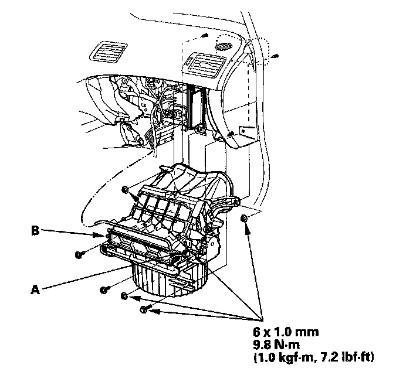

Blower Unit Removal/Installation
Blower Unit Removal and Installation1. Remove the glove box.

2. Cut the plastic cross brace (A) in the glove box opening with diagonal cutters in the area shown, and discard it.

3. Remove the bolts and the glove box frame (A).

4. Remove the wire harness clip (A), the self-tapping screws, and the passenger's heater duct (B).

5. Disconnect the connector (A) from the blower motor. Remove the wire harness clip (B).

6. Disconnect the connector (A) from the recirculation control motor. Remove the self-tapping screws, the bolt, the mounting nuts, and the blower unit (B).
7. Install the unit in the reverse order of removal. Make sure that there is no air leakage.